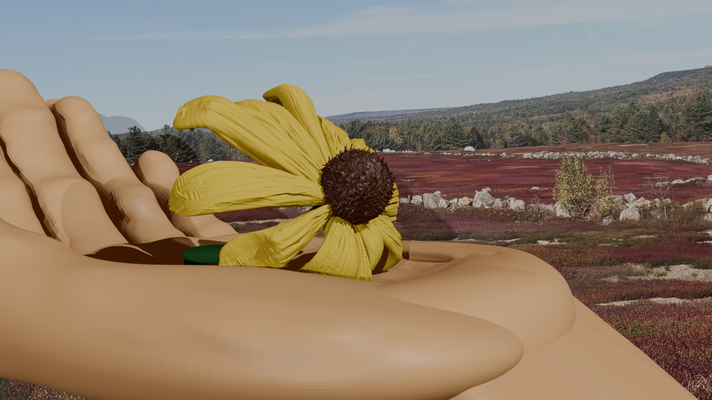

I wanted to create something that was relatively
challenging but still something that I was interested in trying over and
over again to create. I chose a black eyed susan because when I was
younger, I would go with my Grandfather on the
four-wheeler to the blueberry barrens in Northfield
next to our camp. We would collect blueberries
for our pancakes and black eyed susan's to bring back to
my mother and grandmother. The part where I wanted to
challenge myself aside from never using blender before was creating a
hand. I find that I did pretty well and enjoyed the experience.